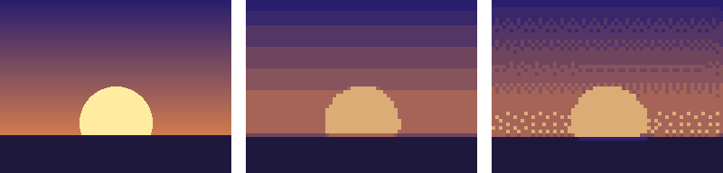

10. Python で後処理する
ドット絵を描くのはエディタの仕事だが、描いた後の拡大、検査、変換などの作業は、Python で自動化できる。この章では、これまでの章で使ってきたサンプルコードのうち、後処理に関するものをまとめて説明する。
10.1. 後処理の流れ
描いたドット絵をゲームや公開用の画像として使うまでの流れを次の図に示す。
図 10.1 描いた後の処理の流れ
いずれも単純な処理だが、絵の枚数が増えると手作業では間違いやすい。スクリプトにしておけば、何度でも同じ結果を得られる。
10.2. 整数倍に拡大する
SNS に投稿したり、ストアのアイコンにしたりするときは、ドット絵を拡大した画像が必要になる。第 2 章で説明したとおり、拡大は最近傍補間で、倍率は整数にする。scale_nearest.py の拡大の処理は次のとおりである。
17def scale_nearest(image: Image.Image, factor: int) -> Image.Image:
18 """画像を factor 倍に拡大する。
19
20 最近傍補間を使うため、1 ピクセルがそのまま factor×factor の正方形になる。
21 """
22 if factor < 1:
23 raise ValueError("倍率は 1 以上の整数で指定する")
24 size = (image.width * factor, image.height * factor)
25 return image.resize(size, Image.Resampling.NEAREST)
Pillow の Image.resize は、補間の方法を指定しないと、画像の種類に応じた別の方法（多くの場合はバイキュービック補間）を使う。ドット絵では、必ず Image.Resampling.NEAREST を指定する。
1python scale_nearest.py my_sprite.png -s 8 -o output/my_sprite_x8.png
SNS の中には、投稿した画像を JPEG に変換するものがある。その場合でも、拡大してから投稿すれば、圧縮ノイズは拡大後の大きなピクセルの境界に出るだけなので、目立ちにくくなる。
10.3. 制作物を検査する
エディタで描いていると、気付かないうちに次のような問題が入り込むことがある。
パレットに無い色を使ってしまい、色数が増える。
消しゴムやブラシの設定のせいで、半透明のピクセルができる。
キャンバスの大きさを変えたとき、タイルの大きさの倍数でなくなる。
半透明のピクセルは、等倍では見落としやすいうえ、GIF 形式や Pyxel のように半透明を扱えない環境では、不透明か透明のどちらかに変換され、意図しない色の点として現れることがある。check_sprite.py は、これらの問題を検査する。
42def check(image: Image.Image, max_colors: int, grid: int) -> list[str]:
43 """問題点の一覧を返す。問題が無ければ空のリストを返す。"""
44 problems: list[str] = []
45 colors = count_colors(image)
46
47 if len(colors) > max_colors:
48 problems.append(f"色数が {len(colors)} 色あり、上限の {max_colors} 色を超えている")
49
50 translucent = sum(n for (_, _, _, a), n in colors.items() if a != 255)
51 if translucent:
52 problems.append(f"半透明のピクセルが {translucent} 個ある")
53
54 if image.width % grid or image.height % grid:
55 problems.append(f"大きさ {image.width}x{image.height} が {grid} の倍数になっていない")
56 return problems
色数の上限は --max-colors で、幅と高さが倍数になるべき値は --grid で指定する。主人公の画像を、色数の上限を 8 色にして検査すると、次のように表示される。
1python sprite_data.py
2python check_sprite.py output/hero.png --max-colors 8
1大きさ: 16x16
2色数: 11
3 #222034 (alpha=255): 46 ピクセル
4 #f4c7a1 (alpha=255): 22 ピクセル
5 #3b6fd1 (alpha=255): 21 ピクセル
6 #8f4a2b (alpha=255): 14 ピクセル
7 #e8b33c (alpha=255): 6 ピクセル
8 #d9906b (alpha=255): 5 ピクセル
9 #26408f (alpha=255): 5 ピクセル
10 #6b3b26 (alpha=255): 4 ピクセル
11 #5e2f22 (alpha=255): 3 ピクセル
12 #4a5578 (alpha=255): 2 ピクセル
13 #323a55 (alpha=255): 2 ピクセル
14問題: 色数が 11 色あり、上限の 8 色を超えている
問題が見つかると終了コード 1 で終了するので、複数の画像をまとめて検査するスクリプトや、継続的インテグレーション（CI）に組み込むこともできる。色ごとのピクセル数を見ると、ほとんど使われていない色も分かる。2 ピクセルしか使われていない色は、他の色で代用できないかを検討する材料になる。
10.4. 縮小・減色で下書きを作る
写真やイラストを縮小し、色数を減らすと、ドット絵のような画像が得られる。reduce_colors.py はこの処理を行う。
34def reduce_colors(image: Image.Image, width: int, colors: int, dither: bool) -> Image.Image:
35 """幅 width ピクセルに縮小し、colors 色に減色した画像を返す。"""
36 height = max(1, round(image.height * width / image.width))
37 # 縮小時は周囲の色を平均する BOX を使い、細部のちらつきを抑える
38 small = image.convert("RGB").resize((width, height), Image.Resampling.BOX)
39 # まず色数を減らしたパレットを求め、そのパレットに合わせて各ピクセルの色を決め直す
40 palette = small.quantize(colors=colors, dither=Image.Dither.NONE)
41 method = Image.Dither.FLOYDSTEINBERG if dither else Image.Dither.NONE
42 return small.quantize(palette=palette, dither=method).convert("RGB")
縮小には、元の画像の範囲内の色を平均する BOX を使う。減色は 2 段階で行う。まず quantize で指定した色数のパレットを求め、次にそのパレットを使って各ピクセルの色を決め直す。2 回目の quantize で誤差拡散法のディザリングを指定できる。

図 10.2 左から、元の画像（256×192 ピクセル）、64×48 ピクセルに縮小して 8 色に減色したもの、同じくディザリング付きで減色したもの。右の 2 枚は 4 倍で表示している。
1python reduce_colors.py photo.jpg -W 48 -c 8 --dither
図 10.2 の中央の画像では空のグラデーションが縞になり、右の画像では縞の境界がディザで和らいでいる。どちらもドット絵らしく見えるが、これは完成したドット絵ではない。第 4 章から第 6 章で説明した線の規則やクラスタの整理は、まったく考慮されていないからである。孤立ドットも多く、拡大するとノイズが目立つ。
この処理は、構図や配色を検討するための下書きとして使う。下書きを別のレイヤーに置き、その上に、これまでの章の規則に従って描き直すとよい。
10.5. おわりに
本書では、ドット絵の基本的な規則と制作の手順を説明した。最後に、この先の進み方の例を挙げる。
たくさん描く：同じ題材を何度も描き直すと、規則が身に付き、判断が速くなる。
好きな作品を観察する：好きなゲームのドット絵を拡大して、ランの長さ、ランプの色数、アウトラインの色などを調べる。練習として模写するのもよいが、模写した絵を自分の作品として公開してはいけない。
大きさを変える：16×16 ピクセルに慣れたら、32×32 ピクセルや、タイルを組み合わせた大きな背景に挑戦する。
ゲームを作る：Pyxel などを使って、描いたキャラクターを実際に動かしてみる。動かしてみて初めて分かることも多い。